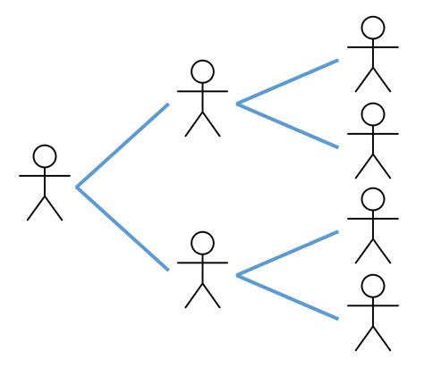

Topic 1. Introduction
\[ \newcommand{\vect}[1]{\boldsymbol{\mathbf{#1}}} \newcommand{\R}{\mathcal{R}} \newcommand{\Reff}{\mathcal{R}_\mathrm{eff}} \]
1 Preliminaries
1.1 Motivation and scope
These lecture notes cover the fundamentals of mathematical models of infectious disease dynamics, with a focus on directly transmitted infections in human populations. The course covers the underpinning concepts and basic elements of a range of modelling approaches, with a focus on how different types of model and aspects of the subject are interrelated. We provide references to the literature for further reading, rather than going into great depth in any specialised area. The topics selected are influenced by the author’s own research interests and, beyond covering the fundamentals of compartment-based models and branching process models in homogeneous populations, do not attempt to be completely comprehensive.
The course contains a mixture of theoretical results and computational approaches. We approach the subject from a mathematical perspective, but we adopt an expository style that prioritises intuition over rigour, something that will suit some readers and disappoint others. We cover theoretical results primarily where they build conceptual understanding, provide general intuition or insight into infectious disease dynamics, or apply across a range of different model types, rather than purely for their own sake. In other situations, we are content with a computational approach.
We emphasise interpretation of modelling results and caution that models are just that, and should not be taken too literally. Except for specific cases, such as near-term forecasting, models generally do not are not intended to provide quantitative predictions. Their value lies more in building conceptual understanding of how fundamental mechanisms shape epidemic dynamics at the population scale, comparing the consequences of alternative assumptions and scenarios, uncovering the effects of potential interventions (which can be counterintuitive), and providing a structured framework for the interpretation of epidemiological data.
1.2 Pre-requisites
This course assumes the reader has previously studied the following topics:
- Calculus of functions of a single variable.
- Fundamentals of linear algebra.
- Ordinary differential equations, including phase plane and linear stability analysis and numerical solutions.
- Fundamentals of probability, including conditional probability and independence, random variables, and discrete and continuous probability distributions.
- Implementation of numerical methods and stochastic simulation methods in a computer programming language such as R, Matlab or Python.
In addition, experience with likelihood functions and their use in frequentist or Bayesian inference will be helpful for Topic 8, while familiarity with the behaviour of partial differential equations will be helpful for Topic 11.
1.3 List of topics
Topics 2–7 cover the foundations, while Topics 8 and 9 cover ideas that will underpin any application of models to real-world data. Topics 10–12 cover more advanced or specialised subjects and can be taken selectively.
- Introduction.
- SIR model.
- Modelling vaccination.
- Kermack-McKendrick model.
- SIRS model.
- Branching processes.
- Stochastic models.
- Model fitting and parameter inference.
- Reproduction number estimation.
- Multi-type models.
- Age-structured models.
- Network models.
2 Branching processes
Epidemic dynamics are the result of many individual transmission events, which can be represented as a branching process (Figure 1).

A key quantity is the average number of people that an infected individual transmits the disease to.
The key factors affecting this quantity are:
- The average duration of the infectious period, \(t_I\).
- The average number of contacts an individual has with other individuals per unit time, \(c\).
- The probability the disease is transmitted when an infectious individual contacts a susceptible individual, \(p\).
- The probability that a contact is susceptible, \(s\).
3 Basic reproduction number
The basic reproduction number \(\mathcal{R}_0\) is a pivotal quantity in ID modelling and is defined as follows:
The basic reproduction number \(\mathcal{R}_0\) is the expected number of infections caused by a single infectious individual in a fully susceptible population over the course of their infectious period.
Notes:
- As will see, one of the reasons \(\mathcal{R}_0\) is so important is that it is a threshold quantity for epidemic models. Generally speaking, an epidemic can occur only if \(\R_0>1\).
- It is important to remember that \(\mathcal{R}_0\) is the average number of infections - in reality there may be substantial variation from one person to another.
Let us begin by assuming that the population is homogeneous, so everyone has the same average contact rate \(c\). When the population is fully susceptible, we have \(s=1\). Therefore the basic reproduction number can be expressed as the product of the duration of infectiousness \(t_I\), the contact rate \(c\), and the probability of transmission \(p\):
\[ \R_0 = pct_I \]
4 Effective reproduction number
The basic reproduction number \(\R_0\) quantifies the number of transmissions per infected individual when the population is fully susceptible. More generally, we define the effective reproduction number \(\R_\mathrm{eff}(t)\) as follows.
The effective reproduction number \(\R_\mathrm{eff}(t)\) is the expected number of infections caused by a single infectious individual over the course of their infectious period when some fraction \(S(t)/N\) of the population is susceptible.
In addition to assuming that the population is homogeneous, we also assume it is well-mixed, meaning that contacts are drawn randomly from the whole population. This implies that \(s=S(t)/N\) where \(S(t)\) is the number of susceptible individuals and \(N\) is the population size. Hence the effective reproduction number at time \(t\) is \[ \R_\mathrm{eff}(t) = pct_I\frac{S(t)}{N} = \R_0 \frac{S(t)}{N} \]
A useful way to think of this is that the effective reproduction number is the product of four factors (DOTS):
- Duration of infectiousness (\(t_I\)).
- Opportunities for transmission (i.e. the contact rate \(c\)).
- Transmission probability (\(p\)).
- Susceptibility of the population \(S(t)/N\).
This can be useful for thinking heuristically about how interventions might affect \(\R_\mathrm{eff}(t)\). For example, treatment may shorten the duration of infectiousness, school closures or working from home reduce opportunities for transmission, masks or distancing interventions are designed to reduce the transmission probability, and vaccination reduces susceptibility.
5 Modelling choices
There are lots of choices in how different aspects of the process are modelled. For example:
- Are there important interventions you want to include in the model such as vaccination or case isolation?
- Does the population have any pre-existing immunity?
- Does recovery from infection provide immunity to reinfection?
- Does immunity (either from vaccination or prior infection) wane over the time period of interest?
- Are births, deaths and ageing likely to have a major impact over the time period you are modelling or can they be ignored?
- What is the temporal relationship between time of infection and time of onward transmission, e.g. is there a long latent period? Is there a lot of variation in transmission times or are they relatively consistent?
- Is age structure important?
- Are stochastic effects important (e.g. is the number of infections relatively small?) or can we use a deterministic model?
- Are there specific population subgroups that are of interest, for example because they have different susceptibility or clinical risk.
- People are different and behave in different ways that affect the dynamics of disease transmission. How much of this heterogeneity is important and how much can you feasibly include in a model?
- What type of data is available to calibrate and validate the model?
As a result there are many variations of infectious disease model. Adding model features or additional model complexity does not always make a model better. Simple models have the advantage that they enable the key factors driving the transmission dynamics to be understood.
The appropriate complexity and type of model will depend on the question being asked and the data available. However, almost all of them contain a transmission process of the kind outlined above at their core.
6 Deterministic approximation
We will return to stochastic models in Topic 6, but for now we consider a deterministic model which describes the average behaviour of the epidemic in a large population.
Suppose at some point in time \(t\), there are \(S(t)\) susceptible individuals, \(I(t)\) infectious individuals and \(R(t)\) recovered individuals. In a short time interval \([t,t+\delta t]\), each infectious individual will make an average of \(c\delta t\) contacts. As the contacts are chosen randomly, the probability that each contact is susceptible is \(S(t)/N\), so the expected number of contacts between an infectious and a susceptible individual is \(cI(t)S(t)/N \delta t\). And finally, since the probability of transmission given contact between a susceptible and an infectious individual is \(p\), we have \[ \textrm{expected number of transmission events} = \frac{pcI(t)S(t)}{N} \delta t \]
In addition, suppose that each infectious individual has probability \(\gamma \delta t\) of recovering in the time interval \([t,t+\delta t]\), so \[ \textrm{expected number of recovery events} = \gamma I(t) \delta t \]
Note: this implies that the infectious period is exponentially distributed with mean \(t_I=1/\gamma\). This simplifies the mathematics considerably, but we will return to more general models that do not make this assumption later on.
From the above, we can calculate the expected change in \(S(t)\), \(I(t)\) and \(R(t)\) between \(t\) and \(t+\delta t\): \[ \begin{align*} \textrm{change in S} &= -\textrm{expected number of transmission events} \\ \textrm{change in I} &= \textrm{expected number of transmission events} - \textrm{expected number of recovery events}\\ \textrm{change in R} &= \textrm{expected number of recovery events} \end{align*} \]
Or in mathematical notation: \[ \begin{align*} \delta S &= -\frac{pcI(t)S(t)}{N} \delta t \\ \delta I &= \frac{pcI(t)S(t)}{N} \delta t - \gamma I(t) \delta t\\ \delta R &= \gamma I(t) \delta t \end{align*} \]
Dividing through by \(\delta t\), taking the limit \(\delta t\to 0\), and defining \(\beta=pc\), we obtain the canonical SIR ordinary differential equation model:
\[ \begin{align*} \frac{dS}{dt} &= -\frac{\beta IS}{N} \\ \frac{dI}{dt} &= \frac{\beta IS}{N} - \gamma I \\ \frac{dR}{dt} &= \gamma I \end{align*} \]
This is known as a compartment-based model because it splits the population into three compartments (\(S\), \(I\) and \(R\)) and treats everyone in the same compartment as identical. This model is the subject of Topic 2.